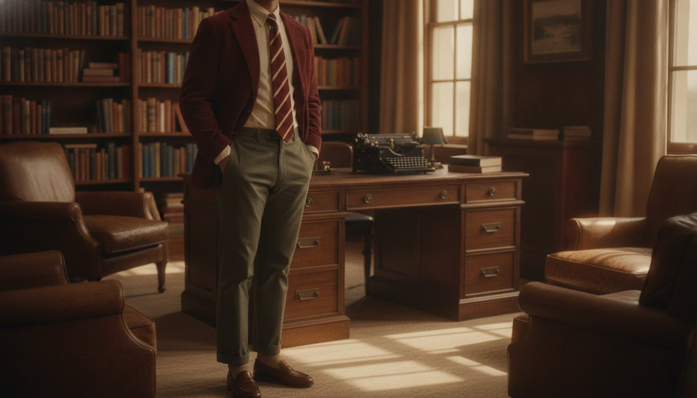
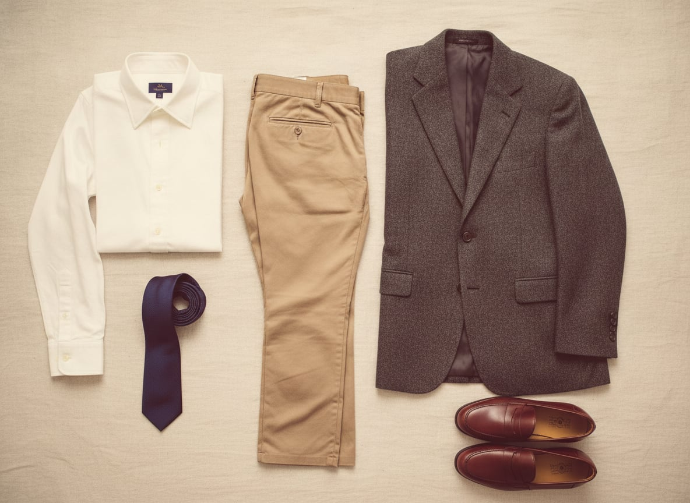
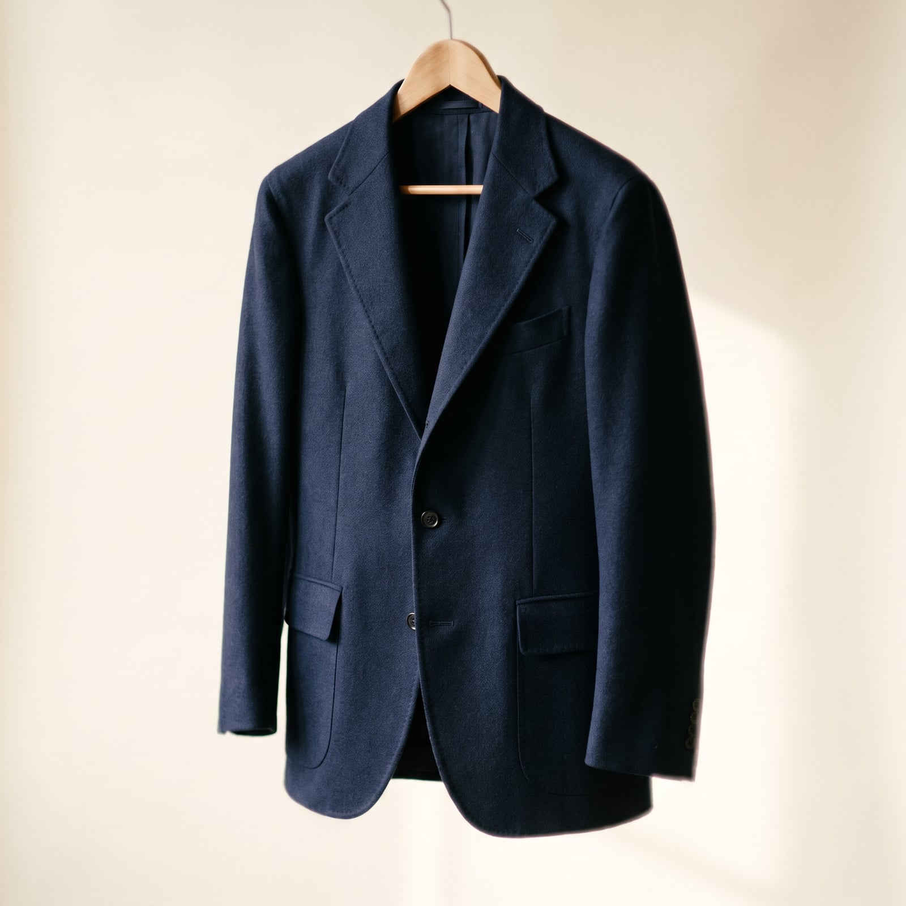
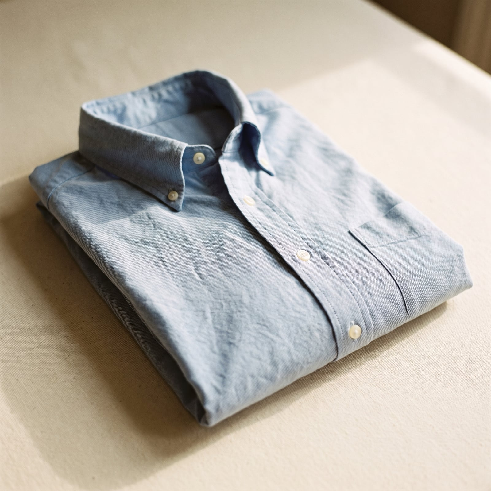
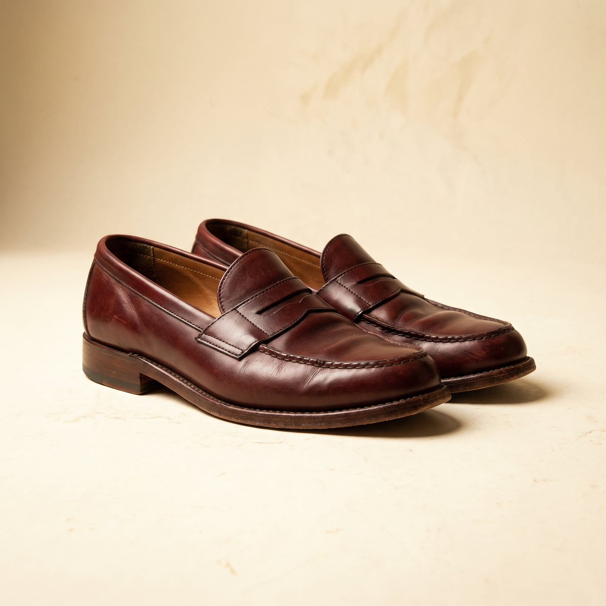
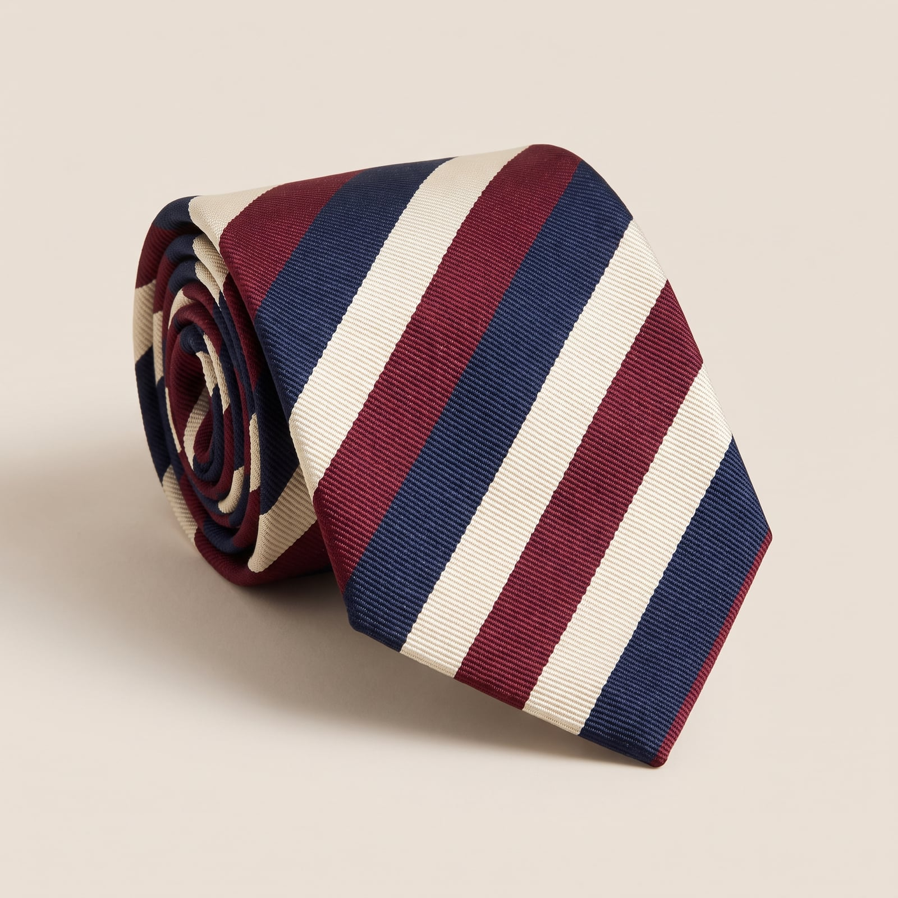
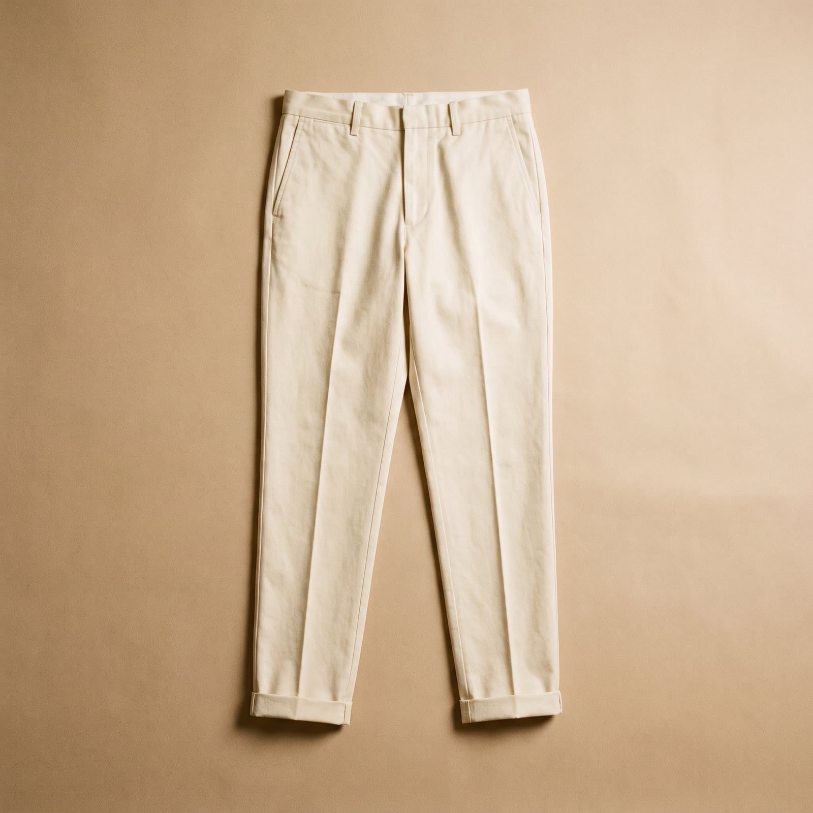

In 1965, a group of Japanese photographers wandered the campuses of Princeton, Yale, and Dartmouth and produced “Take Ivy,” a photobook so devoted to the American undergraduate uniform that it would go on to outsell most fashion magazines back home. What they'd found wasn't new even then — the button-down collar had been quietly perfected by Brooks Brothers since 1896, borrowed, the story goes, from English polo players who pinned their collars down so they wouldn't flap mid-chukka — but they'd found it whole: sack-cut jackets with no waist to speak of, penny loafers worn sockless or close to it, madras in summer and tweed by October, and a studied indifference to whether anyone was impressed.
That indifference is the point. The Ivy man's clothes are unstructured on purpose — a natural shoulder with no padding, a three-roll-two jacket front that never quite decides where its top button is — because the whole ensemble is meant to look inherited rather than assembled. It's a style built by people who trust the institution behind them, the school, the family, the country club, enough that clothing doesn't need to argue on their behalf.
Which is its own kind of confidence: dressing as if you've already been let in, so there's nothing left to prove. The wardrobe rewards continuity over invention — you're not hunting for a look so much as maintaining one, tailored a little differently each decade but recognizably the same, the way a family recipe survives its retellings.

The “sack” refers to the cut, not the fit — a jacket with almost no waist suppression, sitting on the body the way a jacket would if nobody had bothered to shape it. Brooks Brothers popularized the silhouette from the early twentieth century on, and it became the campus uniform's structural backbone by the 1950s, precisely because it looked the same on every body type and never seemed to be trying.
Fused rather than canvassed, so it won't mold to your body over years, but the proportions are close enough to learn the silhouette on.
Shop this →Half-canvassed, a genuine natural shoulder, and built to be let out or taken in as your fit changes.
Shop this →Full canvas, hand-finished, cut specifically to the sack silhouette rather than a European block softened after the fact.
Shop this →
Patented by Brooks Brothers in 1896 after John Brooks watched English polo players pin their collars down mid-match; the American version kept the roll soft and a little unruly rather than stiff, which is exactly what let it survive a century of undergraduate wear.
Gets the collar roll and cloth texture right at a real discount; won't have the two-ply cotton weight of the pricier options.
Shop this →The actual patent-holder's version, or Gitman's, cut generously in true oxford cloth with a proper unfused collar.
Shop this →Made to order in America by former Brooks Brothers shirtmakers; the benchmark the mid-tier options are measured against.
Shop this →
Introduced by G.H. Bass in 1936 as the “Weejun” (a nod to the Norwegian fishermen's shoes it was modeled on), the penny loafer got its name from the 1950s campus habit of tucking a coin into the strap's diamond cutout — nominally for a payphone call, mostly just decoration.
The original, still made, at the most accessible price it's ever been — genuine beefroll construction, not an imitation of one.
Shop this →Handsewn apron construction on a better last, built to be resoled rather than replaced.
Shop this →Cordovan instead of calfskin — it develops a deep, rolling shine with wear and will outlast the rest of the outfit twice over.
Shop this →
Regimental stripes started as actual British and American military and club insignia; American makers reversed the stripe direction from the British convention, partly to sidestep disputes over specific regiments' patterns, which is now the quiet detail that separates an American repp tie from an English one.
Real silk, standard width, from the two houses that effectively define the genre.
Shop this →English-made silk with real hand-finishing at the tip, slightly more texture than a standard repp.
Shop this →Old silk from mills that no longer exist has a hand and drape modern reproductions rarely match.
Shop this →
Adapted from British and American military twill trousers of the early twentieth century — the name comes from “China,” where the cloth was first sourced for colonial uniforms — chinos moved from military surplus stores onto campuses after the Second World War as cheap, durable trousers that happened to look good.
Gets the silhouette right; the cotton twill is thinner and won't develop the same fade over years of wear.
Shop this →Heavier cotton twill and a fuller cut through the thigh that tapers properly, built to be worn for a decade.
Shop this →American-made, heavier cloth, cut with a rise and break specific to this silhouette rather than adapted from a slimmer European block.
Shop this →The odd jacket goes unstructured linen or seersucker, or gets skipped for an oxford and chinos alone. Loafers worn sockless, madras and popover shirts replace the button-down, tie stays home entirely.
The odd jacket layers over a shetland sweater vest, a camel or navy overcoat goes on top, and the chino gives way to grey flannel. A wool scarf, not a tie, becomes the neck's real job.
A trench or a simple rubberized field coat over the jacket, penny loafers swapped for a pair of duck boots kept by the door specifically for this. An umbrella, ideally a proper long one.
The overcoat gets serious -- a heavier wool duffel or polo coat -- with waterproof lace-up boots and a real knit hat rather than nothing at all. Layered wool underneath, not synthetic.
The sack jacket becomes a full suit, the loafers become cap-toe oxfords, and the repp tie tightens into something more restrained -- a solid or a fine stripe. Cufflinks come out.
New England in October — the Cape, coastal Maine, a college-town Saturday with a football game attached. Further afield, Bermuda or a grand tour of England's older universities, taken the summer after graduation and referenced fondly for decades after.
John Cheever and John O'Hara for the fiction, George Frazier's essays for the reference material, The New Yorker read cover to cover, and a battered Fitzgerald novel kept around less to reread than to have visible.
Dave Brubeck and the Modern Jazz Quartet on the record player, a soft spot for the Kingston Trio's collegiate folk, and whatever the a cappella group down the hall was rehearsing. Sinatra at a wedding, without apology.
A wood-paneled study with more books than shelf space, a worn leather club chair inherited rather than bought, a crew oar or two mounted on the wall, and exactly one loud piece of art someone brought back from a semester abroad.
Sailing, squash, a standing golf game, and a genuine interest in college football rivalries that predate his own enrollment. Tends the same garden his parents did.